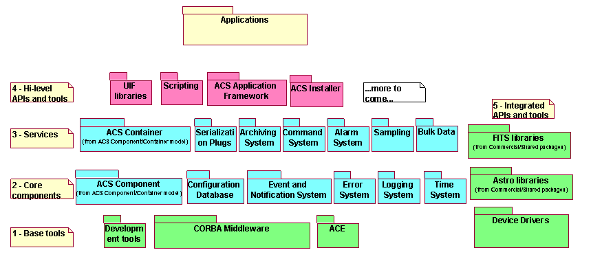

What is ACS?
The Atacama Large Millimeter Array (ALMA) is a joint project between astronomical organizations in Europe, North America, and Japan. ALMA will consist of at least 50 primary twelve meter antennas plus 4 12 meter and 12 7 meter antennas constituting the "compact array". They will be all operating in the millimeter and sub-millimeter wavelength range, with baselines up to 10 km. It will be located at an altitude above 5000m in the Chilean Atacama desert.
The ALMA Common Software (ACS) provides a software infrastructure common to all partners and consists of a documented collection of common patterns in and of components, which implement those patterns. The heart of ACS is based on a distributed Component-Container model, with ACS Components implemented as CORBA objects in any of the supported programmin languages. The teams responsible for the control system's development use ACS Components as the basis for control high level entities and for the implementation of devices such as an antenna mount control.
ACS provides common CORBA-based services such as logging,
error and alarm management, configuration database and lifecycle
management. .
ACS is based on the experience accumulated with similar projects in the
astronomical and particle accelerator contexts, and reuses and extends
proven concepts and components. Although designed for ALMA, ACS can and
is being used in other control systems and distributed software
projects, since it implements proven design patterns using state of the
art, reliable technology. It
also allows, through the use of well-known standard constructs and
components, that other team members whom are not authors of ACS easily
understand the architecture of software modules, making maintenance
affordable even on a very large project .
ACS is publicly available
under the GNU LGPL licence.
Supported Platforms
ACS is supported for ALMA on Linux and VxWorks. An MS Windows version
is running at the ANKA Synchrotron. Other platforms are being investigated, but the porting is expected to
be very easy thanks to the
ACE operating system abstraction layer.
Architecture
ACS is based on object-oriented CORBA middleware, which gives the
infrastructure for the exchange of messages between distributed objects
and system wide services. Whenever
possible, ACS features are implemented using off-the-shelf components;
ACS itself provides in this case the packaging
and the glue between these components. At the same time, whenever
convenient ACS hides all details of the underlying
mechanisms, which use many complex features of CORBA such as queuing,
asynchronous communication, thread
pooling, life-cycle management, etc.

Component-Container Model
The ACS Architecture is founded on the Component-Container model.
Containers provide an environment for Components to run in, with
support for basic services like logging system, configuration database,
persistency and security. Developers of
Components can focus their work on the domain-specific "functional"
concerns without having to worry about the
"technical" concerns that arise from the computing environment in which
their components run. The division of responsibilities between
components and containers
enables decisions about where and when individual components are
deployed to be deferred until runtime, at which point
configuration information is read by the container. If the container
manages component security as well, authorization
policies can be configured at run-time in the same way.
Commercial implementations of the Component-Container model are quite
popular in industry at present, with Sun's Enterprise Java Beans and
Microsoft's .NET being the prime examples. A
vendor-independent specification, the Corba Component Model (CCM), is
under development, but it is not complete,
and production implementations do not yet exist. These are rather
comprehensive systems, and require a wholesale
commitment from developers to use the languages and tools supplied. For
our application domain we do not need
all the power offered by such systems and ACS implements an
infrastructure that is more lightweight.
Base Tools
The bottom layer contains base tools that are distributed as part of
ACS to provide a uniform development and run time environment on top of
the operating system for all higher layers and
applications. These are essentially off-the-shelf components and ACS
itself simply provides packaging, installation and
distribution support. This ensures that all installations of ACS
(development and run-time) will have the same
basic set of tools.
Core Packages
This second layer ensures standard interface patterns and implements
essential services, necessary for the development
of any application. Among these:
- ACS Components
This package provides the base classes for the implementation of components in all supported languages (C++, Java and Python). The object
paradigm of CORBA is fully applied: each entity in the control system
is defined as a Component type and is
represented by one specific CORBA
interface that subclasses one of the base Component classes. Components representing devices to be controlled or exposing physical quantities (monitor and control points) make use os the Characteristic COmponent, Property
and Characteristic design pattern: each Component is
further composed of Properties that correspond to what are called
controlled points, channels or tags in
Supervisory Control and Data Acquisition systems (SCADA). Each Property
is an object too, described by
Characteristics such as min/max values or units.
- Configuration
Database
This package addresses the problems related to defining,
accessing and maintaining the configuration of a run-time system. For
each Component in the system, there are configuration
parameters that must be configured in a persistent store and read when
the Component is started up or
re-initialized.
- Event Channel
The Event Channel provides a generic mechanism to
asynchronously pass information between data publishers and data
subscribers, in a many-to-many relation scheme. It is based on
the CORBA Notification Service.
- Error System
API for handling and logging run-time errors, tools for
defining error conditions; tools for browsing and analyzing run-time
errors.
- Logging System
API for logging data, actions and events. Transport of logs
from the producer to the central archive. Tools for browsing logs. It
is based on the CORBA Telecom Logging Service.
- Time System
Time and synchronization services.
Services
The third layer implements higher-level services. Among these:
- ACS container
Design patterns, protocols and meta-services for centralizing
access to ACS services and Components, to manage the full life cycle of
Components, including persistence, and to
supervise the state of the system. This has been split into three
packages:
- Archiving System
API tools and services for archiving and monitoring data and
events.
Application Frameworks and High-level APIs
The fourth and last layer provides higher-level APIs and tools. The
main goal of these packages is to offer a clear path for the
implementation of applications, in order to obtain implicit
conformity to design standards. Among these, we mention:
- UIF Libraries
Development tools and widget libraries for User Interface development.
At present time support for specific widgets directly in ACS is very limited, since this responsibility in ALMA has been delegated to the Executive subsystem that provides the
operator user interfaces.
- ACS C++, Java, and Python
Application Frameworks
Implementation of design patterns and to allow the development of
standard applications.
ACS Installations
ACS 1.1 and higher is used in more than 10 sites worldwide for
different projects
mostly but not exclusively related to ALMA:
ESO | ALMA Common Software | Contact
Us
Modified on Thursday, 02-Dec-2004 13:19:50 MDT